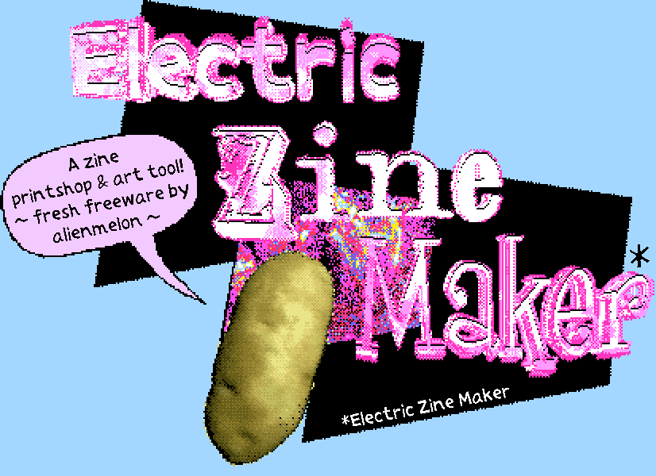

Welcome!
You’re here because I invited you to make some zines.
While I believe we can use zines to make a point / cause some chaos / do some good in the world, I’m here to help you make any sort of zine you please.
This document provides an overview of the zine-making process, including both the how’s and the why’s.
Ultimately this is a resource, not a list of instructions.
This is meant to be an empowering, cathartic, fun form of protest that we can do alone and/or together.
The goal is to make things quick and messy -
don’t self-censor.
Text/email if you have any questions
(disruptivezines@gmail.com)
(This document will be updated over the following weeks)
1. Introduction: Why Disruption Matters
Publishing is political. Publishing can empower or control—compel, confuse, script, persuade. In times of crisis, the act of “making public” becomes urgent. Platforms engineer what you see, who can reach you, and what ideas survive. Those in power use this control to shape narratives that serve them, leaving you powerless to respond. That’s how the machine works.
Publishing is power. It can inform, confuse, connect, or silence. In a world where most communication is owned, filtered, and monetized, the act of making something public on your own terms has become quietly revolutionary.
And yet, publishing—real publishing—can be quietly revolutionary. Not the kind that asks for permission or optimizes for clicks, but the kind that slips into reality like static on a broadcast signal. The kind of media that speaks directly to someone without interference. You see it on community bulletin boards, in grainy zines folded in half on a bus seat, on a handmade sign taped to a lamppost. It’s small, it’s immediate, and sometimes, it’s unforgettable.
Are you tired of it yet? The numbness. The detachment. Maybe you’ve been scrolling—another crisis, another disaster, endlessly depressing—and somewhere along the way, a quiet resignation has set in. The algorithm rewards apathy. It conditions us to feel powerless, to stay still while corporations and political forces control the story.
But here’s the thing. Power doesn’t need you to feel angry. It needs you to feel tired. It needs you to believe there’s nothing you can do.
Nobody expects you to change the world overnight. But you can still push back. Stay angry. Turn it into something more. Tiny, messy acts of creation can ripple outward. Publishing is more than books and blogs. It’s about making something—anything—public. And once it’s out there, it’s a disruption. A crack in the machine.
Publishing today is deeply personal and yet terrifyingly controlled. We connect through networks, but those networks decide who speaks and who vanishes. The algorithms moderate our conversations, shaping our lives more than we’d like to admit. This project bypasses that. It’s not about breaking the internet. It’s about breaking through everything else. One tiny zine at a time.
2. What is This Project?
We are here to capture a moment when the world feels heavier than ever, when increasingly we are encouraged to step back and passively watch existential crisis after existential crisis unfold. We aren’t powerless, though it often feels that way. What does it mean to do any sort of act of defiance, even when it might not be seen?
This project is your chance to find your tiny, messy act of creation. There’s no official membership or secret meetings (though you can pretend there are, because that I the vibe I’d like to give off). You might never meet anyone else involved—and that’s partially by design. Publishing independently protects both your voice and your anonymity. This is a network of ideas, made physical or digital, designed to travel beyond algorithms and reach others directly.
Publishing isn’t limited to books, blogs, or TikTok. A zine, a handmade sign, a piece of paper—it all counts. The goal here is simple: take the thing that’s been stuck in your head and make it tangible. Then, let it go. Put it somewhere it doesn’t belong. Leave it behind for someone else to find.
The point isn’t to follow a perfect plan. The point is to do something that’s entirely yours and put it into the world. The medium doesn’t really matter. What matters is that you create and disrupt.
I challenge you to create a zine with the intent of leaving it somewhere for someone to find. With my help, we’ll figure out topics, formats, and anything else. It doesn’t need to be serious or heavy. Make something without self-censoring, because god knows the algorithm does enough of that for you.
Ready? Good. Let’s Zine.
3. Some Core Principles
What should you keep in mind as you zine?
- Humor Disarms - Humor and joy are your greatest weapons.
- Disrupt, Don’t Destroy - This isn’t about smashing windows or setting fires (necessarily). It’s about psychological disruption.
- Publishing is Power - either you own the narrative, or someone else does.
- Start Fast, Stay Dirty - Forget Perfection. Perfect keeps you stuck. We’re working outside the slow grind of bureaucracy. Leave your zine where someone will find it and move on to the next one.
- Small Acts Make Big Reactions - Disruption isn’t about grand gestures. It’s about creating tiny, plausible chaos that forces bigger systems to react.
- Always be two moves ahead.
- Make it Personal - Don’t feel like we’re solving the world’s problems with a single zine (though if you manage to do that you’ll certainly get a medal of some kind). You’re not responsible for fixing anyone else’s mess—start by making your own.
- You’re Not a Hero (and that’s a good thing). You’re a Spark - You’re here to do something smaller—but no less important. A message in the right place at the right time can change a person's perspective or start a conversation.
- Agitate with Plausible Deniability - Create things that provoke, confuse, or annoy—but always with just enough ambiguity to keep people guessing. You’re not the villain in this story. You’re the wildcard.
- Anonymity is Armor - Anonymity protects your freedom to create honestly. No need to explain yourself, no need to be seen. Use an alias. Leave the work and disappear.
4. How It Works (Generally Speaking)
Join the Zine Machine (the MaZine)
- You did it, you’re here.
Create Something
- Start with a quick zine—a small act that gets you moving without overthinking. It can be absurd, funny, serious, surreal. The only rule is speed: keep it under an hour, then get folding.
Disrupt
- Think of a place where your creation will disrupt routine. Coffee shops, bookstores, train seats, library shelves, benches, bathrooms, nowhere is off limits.
Let it Spread
- Once it’s out there, forget about it. It’s no longer yours. But trust that it’ll reach someone who needs it.

5. Tools & Support
I am here to guide you. If you need formatting advice, creative prompts, or strategies for distribution, reach out. If you want examples, start with zine archives, independent publishing blogs, or the nearest anarchist bookshop.
I'm here to help you move fast, stay messy, and break through blockages.
What Support Looks Like
- Creative Guidance: Need help brainstorming or refining ideas? I’m here to keep things moving without overcomplicating it.
- Formatting and Design: Not a designer? No problem. I can help format your zine if needed or offer advice on layout basics.
- Examples and Inspiration: Stuck on what to create? I’ll provide prompts, references to other zines, and unusual sources of inspiration.
- Practical Assistance: Have logistical questions (printing, folding, distributing)? I’ve got that covered, too.
Where to Start Looking for Ideas
Sometimes, inspiration hides in plain sight. Here are a few ways to get the creative gears turning:
- What makes you angry right now? Scared? Left feeling powerless?
What If I Hit a Wall?
If you feel stuck, that’s okay. The trick is to keep moving:
- Break the format: Try something different, or just take a break. Draw, paint, tear things apart, glue them back together, write a poem, write a story, write an obituary - the opportunities are endless
- Reach out: Sometimes a quick conversation is all it takes to shake loose an idea.
Remember, this project is about doing—about the act of creating itself, not agonizing over the end result.
6. Next Steps
Your First Zine Project
Let’s Start with something small. Here’s a simple plan for your first piece of disruptive media:
- Pick a Theme:
Choose something that’s been on your mind. It could be mundane, surreal, or intensely personal.
Examples:
- “Instructions for surviving an imaginary crisis.”
- “Everything I learned from my worst job.”
- “A list of fake but oddly plausible rules for life.”
- “Oh no the world is falling apart, here’s what I’d like to say to Elon Musk and his puffy laminated face.”
- Create Quickly:
Set a time limit—an hour or two at most. Don’t edit, don’t stop. Let the weird, messy ideas come through. (I promise this will help) - Format Ideas:
Choose a structure that feels right to you. If in doubt, start with an 8-panel folded zine (a single sheet of paper folded). You can also use a piece of paper folded in half, or in quarters - picking a format helps contain your ideas. - Talk to Me:
- Let’s talk about the process along the way. What feels right? What’s difficult? What do you want to do differently?
- Distribute Creatively:
Let’s talk about where your zine can do some damage.
Anonymity as a Strategy
Your work doesn’t need your name on it. In fact, anonymity can be a powerful tool.
- It frees you to be completely honest.
- It leaves no trail for censorship or retaliation.
- It gives the message itself more weight—mystery sparks curiosity.
The Point Is the Doing
This project is about the act of making something real. It doesn’t have to be revolutionary on the first go. It just needs to exist. Put it into the world and let it take on a life of its own.
7. FAQs
Project Questions
- What is a zine, exactly?
Zines (short for “magazines”) are DIY, self-published works. They can be anything: comics, essays, collages, instruction manuals. In this project, they’re tools of expression and disruption. - Do I have to make a zine?
No. This is about creative disruption. A zine is just one format. You can create flyers, posters, stickers, or even a web-based piece. The goal is making something public. - How is this different from just making art?
Art is great, but this is about publishing—putting your voice out there with the intention of being seen, read, or found. Think of it as an act of subtle rebellion. - What’s the goal of all this?
To create something that disrupts routine thought. It might be personal, it might be public, but the goal is to publish with urgency, provoke curiosity, and maybe even inspire someone else.
Creative Process Questions
- Can I get help with ideas or design?
Yes. I’m here to support you with brainstorming, layout advice, and feedback. Just ask. - How long should my zine be?
It’s up to you, but shorter can often be more powerful. An 8-panel zine from one sheet of paper is a great starting point. You can use words or no words. You can draw things or leave the paper blank. It’s a lot of options, really. - Do I need fancy materials?
Nope. A pen, a piece of paper, and your imagination are enough. If you want to get fancy later, go for it. - Do I have to finish it all at once?
No, but urgency is part of the magic. Set a timer and see what happens when you create fast and dirty.
Anonymity and Safety
- Can I stay anonymous?
Absolutely. Anonymity is a core strategy. You can publish under an alias or without any name at all. - Why is anonymity important?
It frees you from fear—of judgment, censorship, or retaliation. It allows your work to take on its own life and mystery. Also you can pick a badass name and alter ego. - Are there risks to distributing my work?
Always, but there are ways to be safe about it. - What if someone asks if I made it?
You didn’t. You have no idea how it got there. You don’t know who you are. You don’t know why you exist. You have a panic attack. You excuse yourself. You find the nearest trash receptacle and throw up because existential questions don’t sit well with you. You feel a little better. You go back and use the zine to wipe the remaining sick off of your sweater. Nobody bothers you in public again. - How do I share safely online?
Avoid platforms. Use encrypted communication, anonymous profiles, or self-hosted websites. I can help with that.
Distribution and Impact
- Do I have to distribute my zine?
That is the goal - How do I know if it made an impact?
You probably won’t. The act of publishing itself is the statement. Sometimes people will tell you it hit them at the right moment, and that’s enough. - Can I leave digital versions instead?
Yes! I can help you incorporate QR codes and safe URLs, and we can digitize your print zine or create a digital zine together. - What if someone steals my idea?
Good. Let them. Then steal one of theirs.
Tools and Support
- Can you recommend resources?
- Reach out to me directly (because I know everything)
- Libraries and archives often have great zine collections.
- Look up artists and activists working in self-publishing.
- Explore zine databases like the Independent Media Center (IMC).
- Do you have zine templates?
Yes. What do you need? Let me help you. Please. This is all I have. - What if I need technical help?
Too bad. Just kidding, that’s my job. - What’s the best way to print my zine?
All you need is a piece of printer paper. You can design your zine on the computer and print it out, or you can draw it on paper and scan/make copies. I’m paying for printing so go crazy (but maybe stick with black and white I don’t have that much disposable income).
Legal and Ethical Questions
- Am I breaking the law by doing this?
Of course not - a zine is just a piece of folded paper. Being careful to not associate your name with it might be a good idea though. - What’s considered "safe" disruption?
Don’t incriminate yourself or others. Just don’t be an idiot. - Should I be worried about copyright?
No. Break as many rules and laws as you can. We can go to jail together.
Mindset and Philosophy
- What if I feel like my work isn’t good enough?
It probably isn’t, to you at least. But you’re the one beating yourself up over it. - Why should I care about publishing?
Wouldn’t you rather tell people what to think and do than the other way around? - Isn’t this all just pointless in the grand scheme?
Yes. - What if I want to quit?
Good. Take me with you.
Miscellaneous
- Can I collaborate with others?
No, I am your only friend. - Can I work on more than one project?
You can do whatever you want, but don’t make this more painful than I’m already trying to. - Do I have to share what I make with you?
Not necessarily, you have free will, but that would be nice. - How long does this project last?
The first phase ends in early April. Then we head to space.
8. Some External Resources
A very small sample of resources available about making zines, about zines themselves, and some examples of activist-y zines. If you are looking for anything in particular, in terms of subject, style, audience, etc., please contact me.
Useful How-Tos:
How to Make an 8-panel Zine (Simple Instruction)
https://zineopolis.blogspot.com/p/h.html
How to Make a Zine (With More Instructions)
https://thecreativeindependent.com/guides/how-to-make-a-zine/
UnStuck - Ideas For Your Next Zine
https://poetry.arizona.edu/blog/unstuck-ideas-your-next-zine
A Collection of Zine Resource
https://guides.lib.utexas.edu/c.php?g=576544&p=3977383
Other Zine-Related Materials:
Activism Zines (Simmons University)
https://simmons.libguides.com/c.php?g=860494&p=6170046
A Zine on Activism
https://ia600201.us.archive.org/10/items/MediaAHowToGuideForActivists/media_how_to_guide.pdf
Many Zines About Organizing
https://www.sproutdistro.com/catalog/zines/organizing/
You Made It To The End
Go Make a Zine